Desktop · 電腦版
台語齒盤使用手冊
照圖一步一步來，五分鐘就會曉用。
閣會當照家己的習慣，調整做上順手的款。
正手爿頂懸先揀你的電腦，快速齒就會綴咧換。圖是 macOS 的畫面，Windows 佮 Linux 的設定攏仝款。
01
開始拍字
猶未安裝？先看按怎安裝。
切換到台語齒盤
佇電腦的輸入法選單，揀【台語齒盤】。
欲暫時拍英文：揤一下 Shift，閣揤一下就切轉來台語。
拍羅馬字
拍 taigi，選字窗就會出現。聲調免拍嘛會使。

揀字、輸出
| 輸出漢字 台語 | ReturnEnter |
| 輸出羅馬字 tâi-gí | Space |
| 後一个字／頂一个字 | Tab ／ ⇧TabShiftTab |
| 直接選字 | qwdf … |
| 刪除當咧拍的字 | Esc |
逐个候選詞頭前的細字，就是直接選彼个字的齒。
拍開設定：⌃⌘SCtrlAltS
⌃ 是 control、⌘ 是 command、⌥ 是 option、⇧ 是 shift。
02
聲調按怎拍
兩種拍法，揀你慣勢的。
設定 → 一般 → 聲調拍法
預設
數字調
聲調用數字齒：tai5gi2 → tâi-gí。選字用字母齒 qwdfzxvy;。
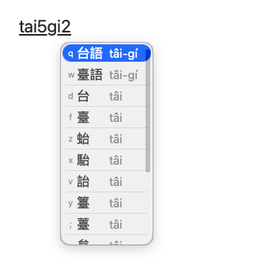
手毋免離開字母區
Telex
聲調用字母齒：taidgiv → tâi-gí。選字用數字齒 1 – 9。
Telex 的齒
| 第 1 / 4 調 | x |
| 第 2 / 8 調 | v |
| 第 3 調 | y |
| 第 5 調 | d |
| 第 7 調 | w |
| 第 9 調 | q |
| ts（白話字 ch） | z |
| tsh（白話字 chh） | zh |
| 連字符 - | f |
袂記得的時
揤 ⌃⌘/CtrlAlt/，Telex 說明就會浮佇螢幕頂；閣揤一擺就收起來。
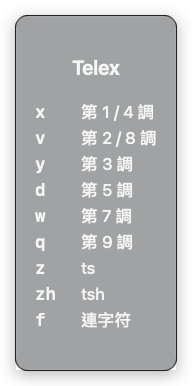
03
你慣勢按怎寫？
寫漢字、寫羅馬字、漢羅濫咧寫，攏有合你的設定。揣著你的彼款，照做就好。
我主要寫漢字
漢字排頭前 （預設）
ReturnEnter 輸出漢字，Space 輸出羅馬字。標點符號自動用全形。

我主要寫羅馬字
揤一下 `，羅馬字排頭前
ReturnEnter 輸出羅馬字，Space 輸出漢字。標點符號自動用半形。閣揤一下 ` 就換轉來。
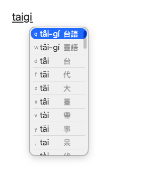
候選詞欲按怎顯示
揤 ⌃⌘HCtrlAltH 一擺換一款，抑是佇設定揀。
設定 → 外觀 → 候選詞顯示
漢字、羅馬字攏會用著
漢羅對應 （預設）
逐格攏有漢字佮伊的羅馬字，一格會當輸出兩款文字。
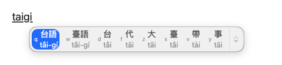
我漢羅濫咧寫
漢羅濫
漢字佮羅馬字逐个家己一格，欲用佗一个就直接揀佗一个。
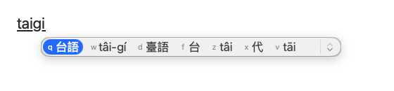
我干焦寫羅馬字
羅馬字
選字窗干焦顯示羅馬字。聲調無拍，伊嘛會共你補起來。
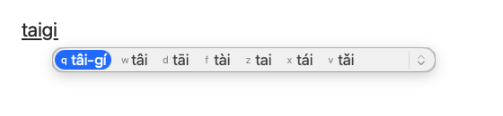
我定定拍詞庫無的字
當咧拍的字囥第一个
拍開了後，你拍的羅馬字會排第一格，揤 ReturnEnter 就照你拍的輸出。無拍開的時，用 ⇧ReturnShiftEnter 嘛會當輸出當咧拍的字。
設定 → 一般 → 當咧拍的字囥第一个
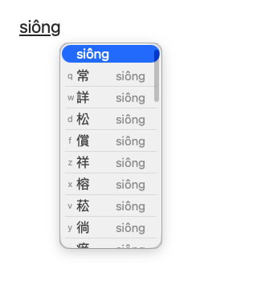
我用白話字／台羅／方音符號
輸入文字
| 切換台羅／白話字 | ⌃⌘CCtrlAltC |
| 切換方音符號 | ⌃⌘PCtrlAltP |
| 拍開方音符號齒盤 | ⌃⌘JCtrlAltJ |
設定 → 一般 → 輸入文字
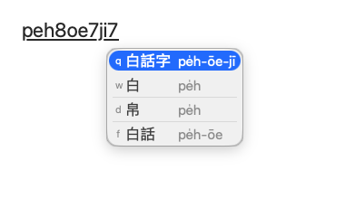
方音符號
拍方音符號，漢字直接出現佇你拍的所在；揤 ↓ 拍開候選詞，用數字齒揀。
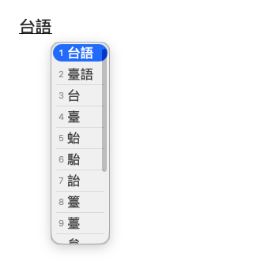
方音符號齒盤
袂記得佗一个齒是佗一个符號？揤 ⌃⌘JCtrlAltJ 共齒盤圖拍開，用滑鼠點嘛會當拍字。
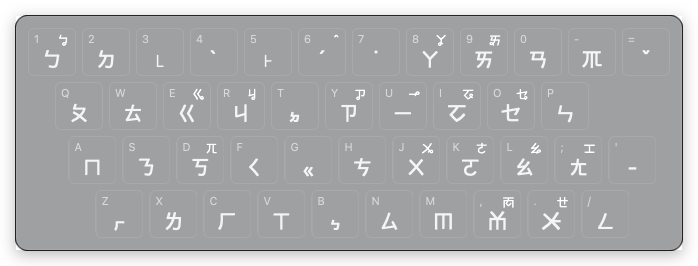
04
選字窗的款式
排列、大細、色水、字型，攏會當換。
設定 → 外觀
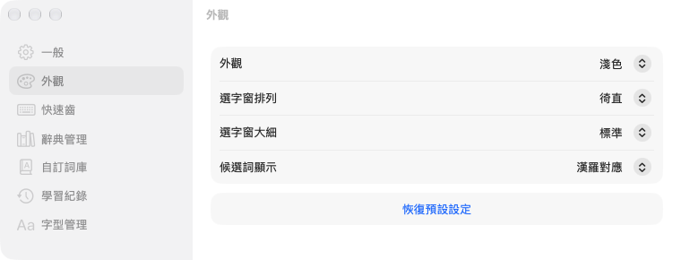
選字窗排列
徛直 （預設）
一逝一个詞，上好讀。
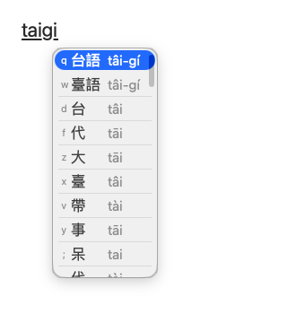
水平
橫的一排，無佔位。用 ] [ 換頁。

展開
平常時是橫的一排，揤 ↓ 就展開，一擺看較濟。
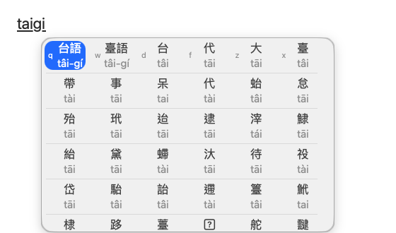
大細佮色水
上細
五款大細：上細、細、標準、大、上大。
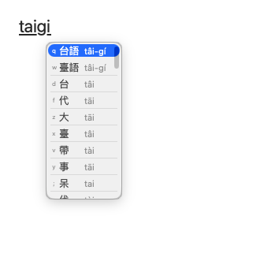
上大
字較大，目睭較輕鬆。
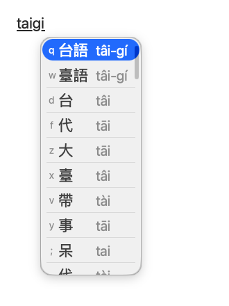
深色
淺色、深色，抑是【自動】綴電腦換。
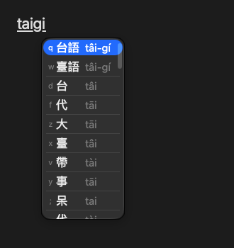
字型
內底有粉圓、芫荽、源樣明體、源樣烏體；嘛會當加入家己的字型。
設定 → 字型管理
粉圓
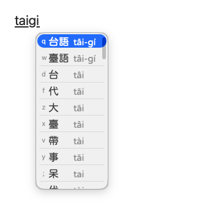
芫荽
源樣明體
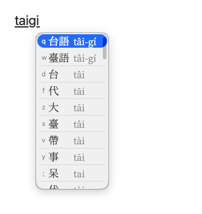
05
快速齒
下跤是預設的齒。無合你的習慣？攏會當改。
| 後一个字 | Tab |
| 頂一个字 | ⇧TabShiftTab |
| 後一頁 | ] |
| 頂一頁 | [ |
| 直接選字 | qwdfzxvy; |
| 徙動選字游標 | ←→↑↓ |
| 修正當咧拍的字 | ⌥←Ctrl← ⌥→Ctrl→ |
| 跳去上頭前／上尾 | ⌥↑Ctrl↑ ⌥↓Ctrl↓ |
| 確定齒 | ReturnEnter |
| 輸出當咧拍的字 | ⇧ReturnShiftEnter |
| 輸出對換的文字 漢字／羅馬字 | Space |
| 直接選字，輸出對換的文字 | ⇧Shift + qwd … |
| 標點換做全角／半角 | ⌃,Ctrl, ⌃.Ctrl. ⌃;Ctrl; |
| 刪除當咧拍的字 | Esc |
| 切換漢字／羅馬字 | ` |
| 切換候選詞顯示 | ⌃⌘HCtrlAltH |
| 切換台羅／白話字 | ⌃⌘CCtrlAltC |
| 切換方音符號 | ⌃⌘PCtrlAltP |
| 拍開符號選單 | ⌃⌘,CtrlAlt, |
| 拍開 Telex 說明 | ⌃⌘/CtrlAlt/ |
| 拍開方音符號齒盤 | ⌃⌘JCtrlAltJ |
| 拍開設定選單 | ⌃⌘SCtrlAltS |
改做家己的齒
設定 → 快速齒
點欲改的彼格
揤新的齒
若是別項功能已經咧用，舊的彼格會自動清掉。
無愛用？揤 ⓧ 清掉
符號選單
揤 ⌃⌘,CtrlAlt, 拍開，選法佮選字仝款。較捷用的符號會排頭前。
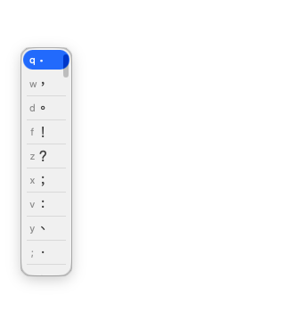
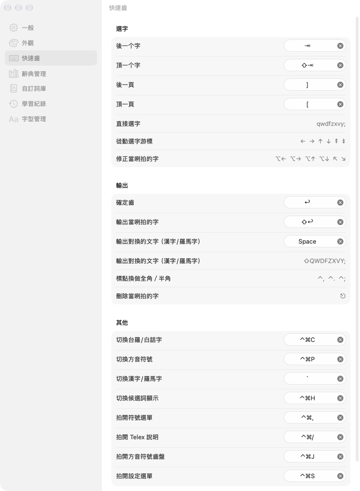
06
辭典佮詞庫
候選詞對佗位來、欲加家己的詞、齒盤學著啥物，攏佇設定內底。
辭典管理
揀欲用的辭典：教育部辭典、台日大辭典、腔口差……無愛看著的候選詞，共彼本辭典關掉就好。
自訂詞庫
辭典無的詞、家己的名、專門用語，加入去就拍會出來。會當匯入、匯出。
學習紀錄
齒盤會記你捷揀的字，愈拍愈順。記毋著的，佇遮刪掉。資料攏佇你的電腦內底。
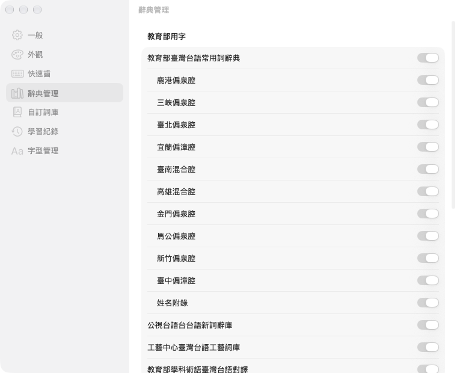
一般設定
輸入文字、聲調拍法、輸出文字、無連字符、自動閬一格、介面語言，攏佇【一般】。
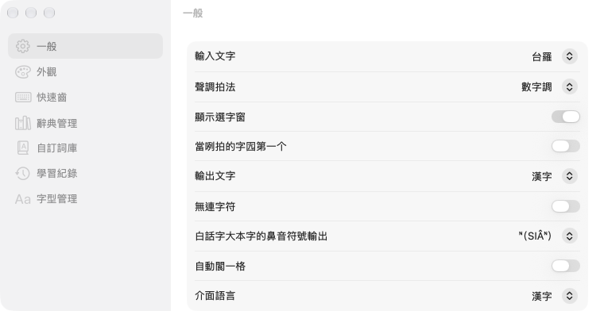
07
速查表
一張圖，共上捷用的齒攏收入來。印出來貼佇桌頂，抑是傳予朋友。
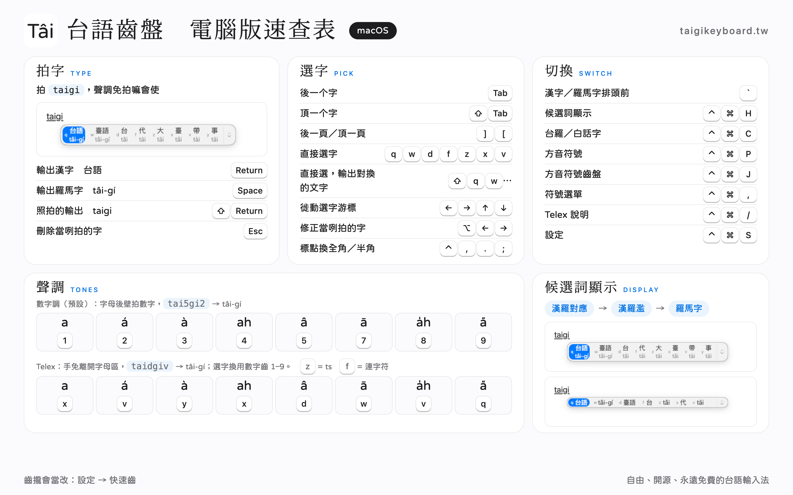
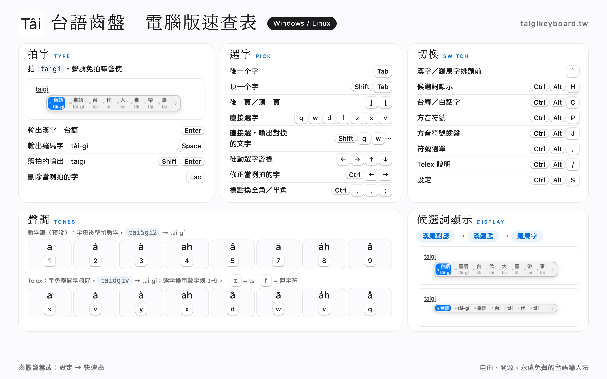